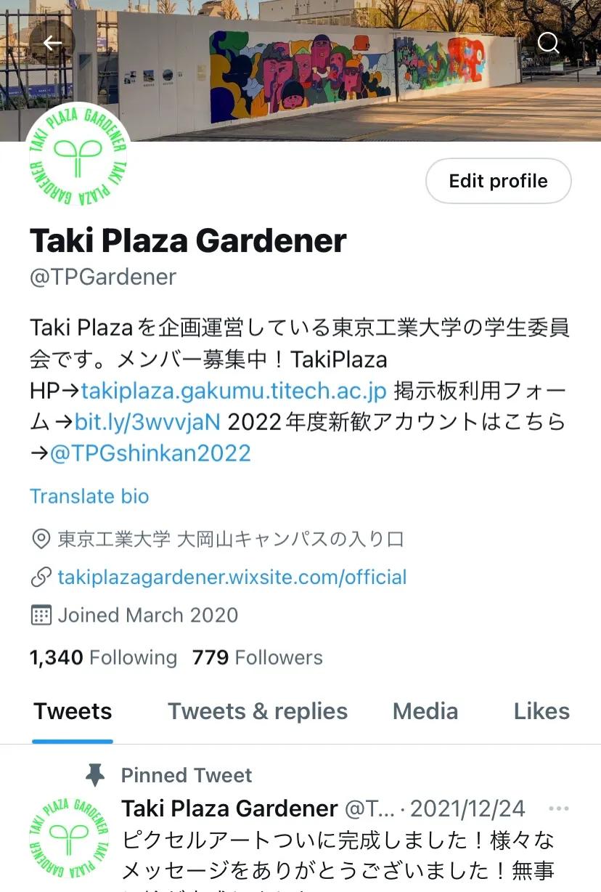
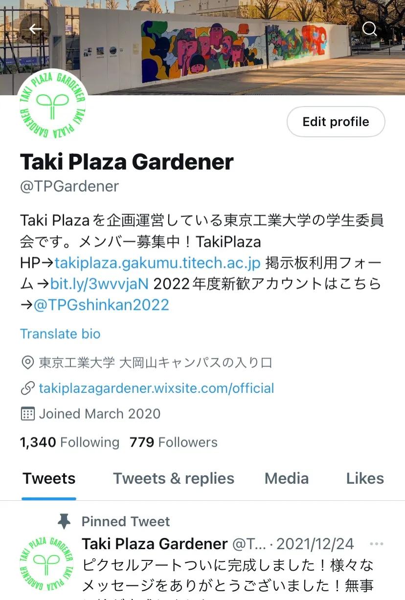

2022年4月11日
TPG班紹介2022①【新歓ブログリレーVol.11】
皆さんこんにちは！TPG広報班の早瀬です。ブログの更新がややおろそかになってしまい申し訳ありません、、、いよいよ授業がスタートしましたね！皆さんの大学生活が本格的にスタートしたということで、充実した生活になることを願っています。
今回の記事と今後の記事の2回に分けて、TPGの班紹介をおこないます！今回の班紹介では、広報班、マネジメント班、コミュニティ班を紹介したいと思います。順番は特に深く考えてはいないですが、広報班を先頭に持ってきたのは広報班班長の独断によるものです。あまり気にしないでください。
広報班
広報班は、Taki
PlazaやTPGの知名度UPを目的とし、そこに繋がるような活動を主におこなっています。Taki
Plazaはぐるなびの会長である滝久雄氏の莫大な支援によって2020年12月に竣工した学生交流施設なのですが、まだ知らない人が多いのも現状です。学生交流施設とあるように、特に東工大生のための施設であり、一人でも多くの東工大生に知ってもらい、Taki
Plazaを積極的に利用してもらいたいと考えています。そのための具体的な活動内容としては、SNS(Twitter,
Instagram)の管理・運営や、広報班企画(昨年度でいう大岡山マップ企画)の企画(数か月に1回ペース)、TPGのホームページの管理、TPGの広報誌である「Hoya」の制作など、幅広いものとなっています。
・SNS
TwitterやInstagramを動かしています。いわゆる"中の人”ってやつですね。広報班が主体的に発信する内容も多いのですが、イベント班やコミュニティ班などが開催するイベントや企画の情報をもらって流すこともあります。SNS動かすのが好きな人や、中の人をやってみたい人、こまめに活動したいなって人にはおすすめです！
 

・広報班企画
広報班では、数か月に1度、東工大生向けの広報企画をおこなっています。例えば、昨年度は「大岡山マップをおすすめスポットで埋め尽くそう！」という企画をおこないました。この企画はTaki
Plazaの壁に貼った大岡山マップにおススメのお店・場所を書いた付箋を貼るというものでしたが、多くの付箋が貼られて非常に盛り上がりました。今後も、このような大きめの企画を班全体でおこなうつもりです。
・ホームページ
広報班メンバーの一部は(広報班でない人もいます)、TPGのフリーペーパー「Hoya」を制作・発行しています。頻度はおよそ年2回(春と秋？)です。基本的に一から制作を自分たちでおこなっていますが、始めたメンバーはみんなほぼ初心者だったので、興味さえあれば特別なスキルが必要ということはないと思います。こちらのフリーペーパーについては、特集のブログ記事を書くことが予定されているので、詳細はそちらをぜひご覧ください。
以上が、これまでの広報班の具体的な活動内容です。要は広報活動をしているということになるんですが、授業のない日などには広報班で遊びに出かけたりもしますよ～
しかし、現在は広報班の人数が少なく、ギリギリで活動を回しているという状態です。今年多くの新入生が広報班に加入してくれることがあれば、広報班はのびのび活動できるようになりますし、上に挙げた以外の新しい活動もできるようになると思います！これを読んで広報班いいかも？？と思った新入生の方は広報班にぜひ来てください。「即戦力」になること間違いなしです！
マネジメント班
マネジメント班では、Taki Plaza Gardener（TPG）及び Taki Plaza全体の管理を行なっております！すなわち、皆様がイメージする「マネジメント」というものをガッツリ行なっております。さて、ここで皆様に一つ質問がございます。私たちは何のために働いてると思いますか？答えは、「TPGが活動しやすい環境を作り出す」ためです〜例えば、Taki Plazaの地下2階の隅っこにあるTaki Plaza Gardenerの部室的な空間（通称「居室」）を整理しています！みなさんもゴミが床に散らばってたりとか、物がどこにあるかわからないような部屋にいたりとか、そこで仕事をしたりとかしたくないですよね…?マネジメント班では、その居室のお掃除もしたりします！そのような活動によって、TPGが活動しやすくなっていく環境が作られます！加えて、2021年度には、Taki Plazaの地下2階にあります、掲示板に掲示するビラやポスターの募集を始めました！サークルの宣伝にも沢山使われていてありがたい限りです！さらにさらに、我々マネジメント班は、リーダー・副リーダー・班長が集まってTPG全体のことについて話し合う重役会にも参加することができたりします！これらの文章で紹介された通り、マネジメント班は、TPGという巨大な組織を俯瞰してみられるので、こういった団体のマネジメントに関わってみたい方や、1年生のうちからバンバン頑張って活動したい方におすすめです！Taki Plazaの縁の下の力持ちになれるこのマネジメント班に、みなさん是非とも興味を持たれてはいかがですか…
コミュニティ班
こんばんは。コミュニティ班、21Bの小山です。
今回はコミュニティ班とはいったいどのような班であるかについて紹介していきたいと思います。
1. コミュニティ班とは？
まず一つ皆さんに質問してみたいと思います。
大学と高校までの学校で一番分かりやすくて違う点って何だと思いますか？
様々な答えがあるとは思いますが、僕は、毎日教室に行ってクラスメイトと交流することの有無だと思います。
具体的に言うと、高校まではホームルームがあって授業を受けるクラスがほとんど変わらずに休み時間を含めて毎日長時間同じメンバーで授業を受けることが普通です。しかし、大学ではホームルームがなく、さらに授業ごとにクラスメイトが変わったりオンラインの授業もあったりと高校までとは学内での過ごし方が大きく変わってきます。
となると、高校までは気付いたら隣の席の人と友達になっていたりして、割と簡単に友達を作ったりすることができますが、大学ではそうはいかなさそうな感じがしませんか？
そして、大学で友達を作るにはサークルに入ったり、授業でたまたま隣に座った人に話しかけてみたりしないといけなさそうですよね…
でもそれって結構大きな決断とか覚悟が必要だったりして難しく感じると思います。
そこで、コミュニティ班は気軽に東工大生同士が出会い、交流できるように「学年・国籍・学院を超えた交流ができる場をTakiPlazaで提供する」ということを目標に、日々様々な活動をしています。
2.これまでの活動紹介
では、具体的にどのような活動をしてきたのかを2021年度を例に紹介していきたいと思います。
2-1.ピクセルアート
この企画は11月から12月にかけて実施した自由参加型の企画です。
コロナ禍により対面で交流することが難しく、東工大生同士で協力してなにかをするということがなかなかできませんでした。そこで、そのような状況であっても東工大の中に一体感を生み出したいと思い、小さな折り紙に様々なメッセージを書き、それを貼り付け一つの絵を完成させるという企画を実施しました。東工大生だけではなく教職員も自由に参加することができ、一か月程度で絵が完成しました(下の図)。
企画運営する上で様々な問題に出くわすことがあり、成功するのか不安なことも多くありましたが、多くの学生や教職員に参加していただくことができ、無事企画を終えることが出来てよかったです。また、メッセージには日本語だけではなく様々な言語の言葉が書いてるのも印象的でした。
2-2.コネクトドミノ
この企画はシンプルでありながらも団結することが求められる「ドミノ倒し」を通じて、留学生と日本人学生との境界をなくし、今までになかったような人のつながりを生み出すことを目的として実施された企画です。
東工大には多くの留学生がいますが、日本人と留学生同士の交流はまだまだ少ないようです。その原因として一番大きいのは言語の壁だと思われます(東工大に来る留学生は日本語が上手な方も多くいますが)。しかし、言語の壁があったとしてもドミノを完成させるという同じ目標に向かって協力することでコミュニティが作れる一つの方法を実施できたためとても良い企画でした。そして、突然の宣伝ですが若葉祭でも新入生同士でドミノをやる企画を考えているのでぜひ参加してみてください。
3.コミュニティ班のいまとこれから
ここまで大雑把にコミュニティ班のこれまでを紹介してきました。
少しでも興味を持ってくれたでしょうか？持ってくれてると筆者としては嬉しいです。
現在、コミュニティ班は21Bの3人と22Bの6人の計9人を中心として他の班と連携しながら先ほど紹介したような活動を行っており、進行中の企画として「イグ東工大賞」というものをやっています(詳しくは下のポスターを参照)。そして、これからもピクセルアートやコネクトドミノのようにジャンルを問わず様々な企画を通じて東工大生のコミュニティが形成できるように活動をしていきます。
4.最後に
ここまで読んでくださりありがとうございました。
コミュニティ班では週一のミーティングだけでなく、長期休みには班員でお出かけしたりするなど仲良く和気あいあいと活動しています。少しでも興味があればコミュニティ班に来てくれると嬉しいです！
おわりに
以上が今回の班紹介になります！広報班・マネジメント班・コミュニティ班について紹介しましたが、いかがでしたか？？残りのイベント班・制作班については今後の記事で紹介していきます！この記事を参考にしてTPGのどの班に入るかを検討してもらえると嬉しいです。
ちなみに、TPGの活動を体験できる体験会を、4/18(月)と4/20(水)(参加したい方は事前に連絡の上、18:30に大学正門前集合)に開催する予定です。ぜひご参加ください！！！参加希望者はTwitterの＠TPGshinkan2022またはInstagramのtaki_plaza_gardenerまでご連絡ください！